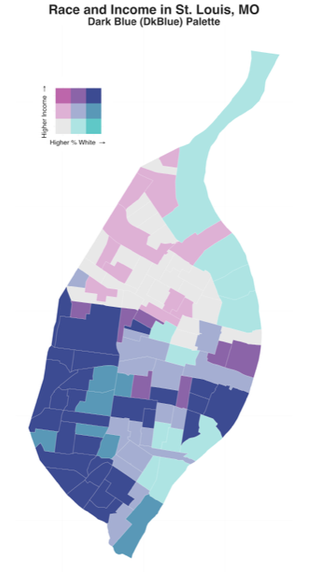

biscale implements a set of functions for bivariate themeatic mapping based on the tutorial written by Timo Grossenbacher and Angelo Zehr as well as a set of bivariate mapping palettes from Joshua Stevens’s tutorial.
Installation
Installing Dependencies
You should check the sf package website for the latest details on installing dependencies for that package. Instructions vary significantly by operating system. Linux users in particular should also check the biscale package repo for a script that installs the relevant dependencies. For best results, have sf installed before you install biscale. Other dependencies, like dplyr, will be installed automatically with areal if they are not already present.
Usage
Creating bivariate plots in the style described by Grossenbacher and Zehr requires a number of dependencies in addition to biscale - ggplot2 for plotting, cowplot for combining the legend and the main map, and sf for working with spaital objects in R:
The biscale package comes with some sample data from St. Louis, MO that you can use to check out the bivariate mapping workflow:
First, we want to create our classes. biscale currently supports a both two-by-two and three-by-three tables of classes, created with the bi_class() function:
The default method for calculating breaks is "quantile", which will provide breaks at 33.33% and 66.66% percent (i.e. tercile breaks) for three-by-three palettes. Other options are "equal", "fisher", and "jenks". These are specified with the optional style argument. The dim argument is used to adjust whether a two-by-two and three-by-three tables of classes is returned
Once breaks are created, we can use bi_scale_fill() as part of our ggplot() call:
# create map
map <- ggplot() +
geom_sf(data = data, aes(fill = bi_class), color = "white", size = 0.1, show.legend = FALSE) +
bi_scale_fill(pal = "DkBlue", dim = 3) +
labs(
title = "Race and Income in St. Louis, MO",
subtitle = "Dark Blue (DkBlue) Palette"
) +
bi_theme()Other options for palettes include "Brown", "DkCyan", "DkViolet", and "GrPink". The bi_theme() function applies a simple theme without distracting elements, which is preferable given the already elevated complexity of a bivarite map. We need to specify the dimensions of the palette for bi_scale_fill() as well.
To add a legend to our map, we need to create a second ggplot object. We can use bi_legend() to accomplish this, which allows us to easily specify the fill palette, the x and y axis labels, and their size along with the dimensions of the palette:
legend <- bi_legend(pal = "DkBlue",
dim = 3,
xlab = "Higher % White ",
ylab = "Higher Income ",
size = 8)Note that plotmath is used to draw the arrows since Unicode arrows are font dependent. This happens internally as part of bi_legend() - you don’t need to include them in your xlab and ylab arguments!
With our legend drawn, we can then combine the legend and the map with cowplot. The values needed for this stage will be subject to experimentation depending on the shape of the map itself.
# combine map with legend
finalPlot <- ggdraw() +
draw_plot(map, 0, 0, 1, 1) +
draw_plot(legend, 0.2, .7, 0.2, 0.2)
# print map
finalPlot

Contributor Code of Conduct
Please note that this project is released with a Contributor Code of Conduct. By participating in this project you agree to abide by its terms.